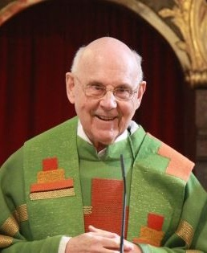

Écrit par Fr. Peter Hocken

Création: 27 juillet 2015
Affronter l’injustice passée
Église Catholique, Juifs messianiques et Deuxième Concile de Jérusalem
Présentation lors de la Conférence de l’UMJC [Union of Jewish Messianic Congregations], à
Baltimore, 18 juillet 2015.
Je suis très heureux de déférer à cette invitation à venir échanger sur le TJCII (Vers un Deuxième Concile de Jérusalem) à l’occasion de cette conférence de l’UMJC. D’abord, parce qu’il y a eu de forts liens avec l’UMJC à la naissance de TJCII. Marty Waldman était président à l’époque, et l’un de ses premiers partisans était Dan Juster. Mais il y a une deuxième raison: mon appréciation pour le travail de Mark Kinzer dont vous serez familiers. Une des raisons de cette appréciation est ma perception que Mark est, à un titre éminent, le théologien de TJCII - un rôle qui n’est pas encore compris actuellement par toutes les personnes impliquées dans l’initiative! C’est Mark qui a élaboré le plus clairement une ecclésiologie bilatérale, la vision de l’Église composée de juifs et de non-juifs, qui conservent leur caractère distinctif propre, mais sont faits un par le sang de la croix [cf. Ep 2, 14]. Mais cette ecclésiologie bilatérale est, en effet, le fondement théologique de ‘Vers un Deuxième Concile de Jérusalem’. Car la vision de TJCII est celle de la restauration de cette unique Église des juifs et des gentils, par un second Concile de Jérusalem, qui sera un rassemblement dans l’unité des deux expressions de l’Église, dans la pleine reconnaissance mutuelle et le respect qui revient à l’une et à l’autre. Le juste respect est une œuvre de restauration. L’injustice d’un passé de dédain et de mépris était l’exact opposé du respect.
Une autre raison pour laquelle Mark Kinzer est un théologien-clé pour TJCII est sa reconnaissance de la nécessité du rôle de l’Église catholique, du fait de sa connaissance de la tradition catholique, acquise en particulier au cours de ses années de travail avec Steve Clark, à Ann Arbor. Je suis le seul catholique parmi les membres originaux du comité de TJCII (un second, Johannes Fichtenbauer, de Vienne, en Autriche, s’est ajouté deux ans plus tard). Je suis conscient depuis le début que la participation des catholiques à cette initiative est une pierre d’achoppement pour beaucoup – tant les chrétiens évangéliques sans amour pour Rome, que les Juifs messianiques très sensibilisés aux souffrances du peuple juif infligées par des catholiques et par l’Église catholique. Pour les Juifs messianiques, les souvenirs juifs de l’oppression catholique au long des siècles sont souvent corroborés par les antipathies évangéliques envers le catholicisme. L’opposition messianique à la participation catholique à TJCII a encore augmenté avec la reconnaissance officielle récente par le Vatican de « l’État de Palestine ».
La première raison pour laquelle il est essentiel pour les catholiques d’être impliqués dans l’initiative de TJCII est la pleine confession devant le Seigneur des péchés commis durant près de deux mille ans à l’encontre du peuple juif, et notamment contre toute expression de foi juive en Yeshua. Du fait que l’Église catholique porte une responsabilité majeure dans cet événement, la confession catholique de ce péché est essentielle pour qu’aient lieu une guérison complète et une restauration. Voilà pourquoi les voyages de prière de confession de ces péchés ont joué un rôle important dans l’histoire de TJCII. Ce processus a commencé dans les premières années où les responsables du TJCII, accompagnés de quelques intercesseurs, allèrent prier en Espagne, à Rome, à Nicée, et en Israël (Yavné et Jérusalem).
Cette confession du péché chrétien s’est concentrée sur l’enseignement de la substitution et les mauvais fruits qui en ont résulté. En tant que prêtre ordonné, j’ai souvent eu à montrer la voie de la confession catholique du péché. À Nicée, nous avons confessé trois choses: 1. La marginalisation des croyants juifs, qui aboutit à ce qu’ils n’ont pas eu de représentation, ni de possibilité de s’exprimer, lors du Concile de Nicée en l’an 325. 2. La décision de Constantin, acceptée par les évêques, d’imposer un calendrier non juif à l’ensemble de l’Église, ce qui a empêché les croyants juifs de célébrer les fêtes d’Israël dans la communion de l’Église. Ce fut le début de l’interdiction aux baptisés de toutes les pratiques juives. 3. Le troisième péché confessé fut l’excommunication, en 787, au Concile de Nicée [II] des chrétiens qui participaient au culte synagogal. En Espagne déjà, nous avions confessé les horreurs de l’Inquisition espagnole, car la pire part de toute l’histoire fut celle de l’Inquisition espagnole et portugaise. Beaucoup de violence fut infligée au peuple juif par l’Inquisition, ce qui a conduit à des baptêmes forcés, puis à des sanctions pour avoir pratiqué le judaïsme en secret. Un acte d’humilité catholique plus intense a eu lieu au cours de deux visites en Amérique latine, au cours desquelles, en Argentine (2005) et au Brésil (2013), Johannes Fichtenbauer et moi avons confessé les péchés de l’Église catholique contre le peuple juif et contre les conversos, ou marranes.
Ces développements montrent le caractère essentiellement spirituel et prophétique de TJCII. Il y a là un paradoxe. TJCII s’est manifesté de manière charismatique, sous la forme d’une vision qu’a eue Marty Waldman.
La plupart des décisions majeures des responsables découlaient de mots ou d’images venant du Seigneur; par exemple, les premiers voyages de prière en Espagne, à Rome, Nicée, et Jérusalem, étaient basés sur une vision de quatre portails historiques, dont a bénéficié Rick Ridings. Le paradoxe est que TJCII, qui avait un caractère nettement charismatique, veut prévaloir sur la vision d’Un seul Homme Nouveau des dirigeants d’Église de toutes tendances spirituelles et théologiques. Cela pose un dilemme: comment présenter cette vision à ceux qui n’évoluent pas dans le monde charismatique, tout en sachant que, en tant que prophétique, l’initiative charismatique inédite et totalement novatrice qu’est TJCII doit dépendre en tous points de la guidance du Saint-Esprit.
Un autre développement important de TJCII, qui a fait suite à une parole du Seigneur, s’est produit en 2005-2006. En 2005, les responsables préparaient une importante conférence internationale à Jérusalem pour l’automne 2006, afin de réfléchir sur les dix premières années de TJCII et préparer les dix prochaines. Lors de notre réunion de l’automne 2005, nous avons reçu une parole prophétique nous enjoignant de nous rendre à Antioche avant d’aller à Jérusalem. Nous avons donc modifié nos plans, et déplacé le lieu de la réunion du printemps 2006 de Nairobi à Antioche (aujourd’hui Antakya en Turquie). À Antioche, nous étions environ 30 personnes, avec d’autres dirigeants et intercesseurs, outre le Comité du TJCII. Je m’attendais à une autre session de repentance pour la théologie de la substitution de l’Église des premiers siècles. Mais ce n’est pas ce qui s’est produit. Le premier matin, nous avons lu à haute voix tous les passages du Nouveau Testament qui mentionnent Antioche. Les responsables messianiques présents ont ensuite souligné que trois conflits ont eu lieu en relation avec Antioche, et que, dans les trois, des croyants juifs étaient impliqués: 1. la perturbation causée lorsque des croyants venus de Jérusalem ont exigé que des Gentils convertis soient circoncis, différend qui a conduit au concile des apôtres et anciens de Jérusalem, relaté en Actes 15; 2. le différend entre Paul et Pierre décrit en Galates; 3. le conflit entre Paul et Barnabas à propos de Jean Marc, qui a mené à la rupture de leur partenariat missionnaire. Les responsables messianiques ont été amenés à faire repentance pour les divisions et les querelles dans la communauté messianique et à prier pour l’unité du mouvement. On prenait conscience du terrible exemple donné aux nouveaux croyants issus de la gentilité.
À Antioche, il devint clair pour nous que la vision d’une ecclésiologie bilatérale est venue d’Antioche, pas de Jérusalem. Paul ne fut en mesure de formuler sa doctrine sur l’Église dans la première moitié d’Éphésiens, qu’en raison de son expérience à Antioche, où, pour la première fois il y avait une église de juifs et de Gentils ensemble. C’est à Antioche que, « toute une année durant, ils [Barnabas et Paul] vécurent ensemble dans l’Église et y instruisirent une foule considérable. (Actes 11, 26). La restauration pour laquelle TJCII prie et travaille requiert la restauration de la juste relation entre Antioche et Jérusalem. Pour TJCII, cette expérience a renforcé notre sentiment que cette manière de voir les choses [vision] concerne chaque expression de l’Église des nations, y compris donc de toutes les Églises d’Orient, tant les orthodoxes d’Orient [russes grecques, roumaines], que les églises orthodoxes orientales [séparées depuis le Vème siècle. C’est une illustration d’une chose qui s’est produite à plusieurs reprises dans TJCII: comment l’initiative de prière prophétique provoque un développement qui nécessite alors l’analyse et la réflexion théologiques. À Antioche était présente une sœur catholique grecque qui avait fondé un monastère en Syrie pour l’unification de l’église d’Antioche, et un frère de l’Église orthodoxe syrienne. [1] L’expérience d’Antioche mit TJCII face à face avec les anciennes églises du Moyen-Orient, dont plusieurs sont de langue arabe et qui sont profondément enracinées dans l’enseignement de la substitution et en grande partie hostiles à Israël. Quand nous quittâmes Antioche, un groupe alla vers l’est, en Turquie, à destination de Mardin, un centre historique de l’Église orthodoxe syrienne, et un autre groupe se rendit en Égypte, où leur message fut bien reçu dans un monastère copte orthodoxe. C’est la préoccupation du Vatican pour les églises catholiques du Moyen-Orient qui est un élément moteur de la diplomatie vaticane et qui a joué un rôle dans la récente reconnaissance d’un "état" palestinien.
Pour les Juifs messianiques, il est difficile de comprendre comment l’Église catholique peut enseigner la non-révocation de l’alliance avec Israël dans Nostra Aetate et le Catéchisme Catholique, puis conclure cet accord avec les Palestiniens. Comment est-ce possible? Ce n’est pas la duplicité. Cela montre la profondeur de la pénétration de l’idée de substitution dans toute la théologie de l’Église durant tant de siècles. Il y a quelques années, un savant méthodiste, R. Kendall Soulen, a décrit trois formes de la théologie de la substitution ou, comme il l’appelait, du ‘supersessionisme’. Les deux premières sont assez évidentes. Tout d’abord, un ‘supersessionisme punitif’ qui croit que Dieu a rejeté le peuple juif à cause de son péché et de son incrédulité, en particulier celle qui a consisté à ne pas accepter Jésus. Deuxièmement, un supersessionisme ‘économique’ [au sens théologique de ‘dispensation’], qui tient que l’alliance avec Israël a pris fin quand elle a été accomplie par et en Jésus. L’apport le plus original et le plus important de Soulen est sa troisième catégorie, celle qu’il appelle ‘substitution structurelle’ [en anglais, structural supersessionism]. La substitution structurelle est la forme de théologie qui laisse Israël, son élection et son histoire, en dehors de sa présentation de la foi chrétienne. La théologie chrétienne a été massivement touchés par cette substitution structurelle: lorsque sa présentation du salut saute de Genèse 3 à Matthieu 1; quand elle mentionne à peine que Jésus est un Juif, ou que les Douze étaient des Juifs; quand il n’y a pas de différence entre évangéliser les juifs et évangéliser les païens; quand Jérusalem est traitée comme toute autre ville, ou comme une ville sainte des trois principales religions monothéistes (le dernier point de vue est caractéristique de la politique diplomatique du Vatican). Cette forme de pensée de substitution: l’absence d’Israël et du peuple juif, est plus difficile à combattre. Elle n’est évidemment pas antisémite; elle ne dit pas de mal du peuple juif. Elle l’ignore, tout simplement. C’est le mauvais fruit de 1700 ou 1800 ans de distanciation réciproque des traditions juives et chrétiennes, une distanciation conjuguée à une ignorance croissante, un manque de respect, et une présentation caricaturale, en particulier du côté chrétien.
Ici, il est important de mentionner le dialogue entre le catholicisme et le judaïsme messianique, auquel Mark Kinzer et moi avons pris part dès ses débuts, en 2000. Je vois le dialogue comme entièrement complémentaire de TJCII. Les deux initiatives sont à la fois nécessaires et indispensables, mais elles sont différentes et complémentaires. TJCII est essentiellement une initiative prophétique, qui s’efforce de se laisser conduire à chaque étape par l’Esprit Saint, alors que le dialogue est fondamentalement une entreprise théologique. Sous un certain angle, TJCII est le plus important. Suite à des siècles de séparation, le travail de rétablissement de la communication, de renouvellement de la rencontre, requiert à la fois du prophétisme spirituel et de la théologie. Le prophétique spirituel aide à purifier l’air vicié, il propose une vision inspiratrice, capable de stimuler un engagement passionné chez les gens ordinaires.
Mais sans le travail scientifique des exégètes, théologiens et historiens, il n’y a rien pour remplacer l’enseignement déformé du passé, rien pour mener à des changements dans l’enseignement et la ligne de conduite de l’église. Cette reconsidération de l’enseignement de l’Église, cette purification de sa compréhension, est une tâche théologique, pour laquelle TJCII est pas équipé.
Sous cet angle du changement de la pensée de l’Église, le dialogue est plus important. Un élément important du dialogue est son caractère quasi officiel: inauguré par le théologien de la Maison pontificale, le père dominicain (futur cardinal) Georges Cottier, presque certainement avec l’approbation ou sur la suggestion du pape Jean-Paul II. Pour cette raison, il y a toujours eu une participation épiscopale et, depuis 2003, celle d’un Cardinal (actuellement le cardinal Christoph Schönborn, dominicain, archevêque de Vienne, Autriche). Jusqu’à maintenant, ce dialogue a eu peu d’effet sur la théologie catholique. En partie du fait de la confidentialité qu’on nous a demandé d’observer au début - en raison de la crainte catholique que le dialogue avec la communauté juive dans son ensemble soit mis en danger si l’existence de ce dialogue était révélée. En 2006, ce secret a été levé, mais avec une forte recommandation de discrétion. Aujourd’hui, il est permis de faire connaître son existence et ses discussions. Le nouveau livre de Mark Kinzer, Searching Her Own Mystery,[2] est en fait la publication, avec quelques modifications et ajouts, des documents qu’il avait préparés pour ce dialogue.
À mon avis, il est providentiel que TJCII ait commencé d’abord, car le terrain devait être dégagé et préparé par des moyens spirituels, prière et repentance, caractéristiques constantes de TJCII. De par sa nature, TJCII doit être ouvert à tous les chrétiens et à toutes les Églises chrétiennes. Le dialogue est seulement entre juifs messianiques et catholiques, bien que, dans les trois dernières années, l’équipe catholique ait deux membres juifs catholiques, tous deux impliqués avec Mark dans les Consultations d’Helsinki. Sur ce point, TJCII a aidé à semer les graines pour d’autres rencontres théologiques, par exemple un possible dialogue entre juifs messianiques et anglicans.
Les échanges sérieux entre juifs messianiques et catholiques, mis en pratique dans le dialogue, sont importants en raison du rôle prépondérant joué par la tradition catholique dans la formulation de la théologie chrétienne au fil des âges. Cette tâche ne peut être accomplie que par ceux pour qui la continuité de la tradition est fondamentale. En fait, elle est due à des catholiques et à un anglican de TJCII, que la vision originale de Marty Waldman – d’un concile de Jérusalem, composé d’évangéliques, de pentecôtistes, et de juifs messianiques, qu’on avait envisagé de tenir à la Pentecôte 1997 - a amenés à transformer en une initiative à long terme, Vers un Deuxième Concile de Jérusalem, oeuvrant à une rencontre des responsables de tous les juifs qui croient en Yeshoua et de toutes les confessions chrétiennes, tâche qui ne pouvait être réalisable qu’après un grand travail de l’Esprit Saint sur tous les participants.
Cette nécessaire interaction de l’ensemble du patrimoine juif avec l’ensemble du patrimoine chrétien ne peut avoir lieu seulement entre juifs messianiques et chrétiens évangéliques. Elle doit être une guérison des blessures résultant de 1800 ans d’hostilité. Les traditions juive et chrétienne ont été séparées et en conflit l’une avec l’autre durant les tout premiers siècles chrétiens, et de manière définitive à partir du quatrième siècle.
Le rejet des croyants juifs par ce qui est devenu l’Église des Gentils a peut-être été prédit par Paul quand il a mis en garde les Gentils contre l’arrogance envers leurs frères juifs: « Si tu veux te glorifier, [souviens-toi que] ce n’est pas toi qui portes la racine, c’est la racine qui te porte. » (Rm 11, 18). Cette séparation de l’Église d’avec ses racines en Israël a eu pour résultat, du côté juif, une tradition juive déformée par le rejet de Yeshua; et du côté chrétien, un héritage chrétien déformé par l’exclusion d’Israël. La correction de ces distorsions est nécessaire pour la venue du Messie Jésus dans la gloire. Ce n’est que quand cette rencontre sérieuse a lieu que la substitution structurelle peut être enlevée, qui empêche l’Église d’envisager les promesses immuables concernant la terre d’Israël et la ville de Jérusalem.
Tant TJCII que le dialogue entre juifs messianiques et catholiques traitent des conséquences de cette histoire. TJCII aborde les questions de manière plus complète en insistant pour que chaque tradition chrétienne ait un rôle à jouer, y compris l’Église catholique et l’Église orthodoxe. Une déclaration faite en 2000 par les membres non juifs du comité de TJCII affirmait: « Nous reconnaissons que pour qu’un tel Concile ait lieu, toutes les Églises et traditions de la gentilité doivent être amenées par le Saint-Esprit à un processus de prière et de purification. » Je dois mentionner que, dès le début de TJCII, nous avons réalisé que la présence de l’Église orthodoxe était nécessaire. Aussi avions-nous réservé une place pour un orthodoxe dans l’équipe des responsables, quand nous aurions trouvé la personne adéquate. Le P. Vasile Mihoc, de l’Église orthodoxe roumaine a intégré le comité en 2005.
J’en viens maintenant à ce qui, je pense, constitue la raison la plus profonde de la nécessité absolue de la participation de l’Église catholique (et des Églises orthodoxes) à TJCII. Les Églises anciennes ont besoin du travail de purification le plus profond, tout en étant porteuses des plus riches trésors dans le Christ. Les anciennes Églises ont besoin du travail de purification le plus profond, parce que, chez elles, le virus de la substitution ou du remplacement a été le plus longtemps à l’œuvre et est devenu "quasi-canonique" dans les écrits des Pères de l’Église. Cette tradition constitue un plus grand obstacle pour les Églises orthodoxes que pour les catholiques, en raison de la grande vénération orthodoxe pour les pères de l’Église, dont il n’y a pas d’équivalent à Vatican II. Par ailleurs, à l’origine, les anciennes Églises ont reçu leur foi de la racine juive, qui est la source de leurs richesses cachées. Ces richesses se trouvent surtout dans les liturgies des églises anciennes, dont les racines sont plus anciennes que le virus de la substitution. Car l’Église chrétienne primitive était une communauté de culte bien avant d’avoir commencé à formuler des croyances. Ainsi, l’orientation eschatologique de la première Église s’est conservée plus fortement dans les liturgies que dans la théologie. Un autre secteur-clé de recherche serait l’étude du processus de transition du culte de la communauté entièrement juive de la première génération à celui de l’église du quatrième siècle, issue pratiquement en totalité de la gentilité.
Cette rencontre entre les patrimoines juif et chrétien est une tâche énorme, beaucoup plus grande que nous ne le supposons généralement d’emblée. Les participants juifs doivent scruter l’histoire et le patrimoine juifs pour passer au crible ce qui résulte du rejet juif de Yeshua. Les chrétiens doivent faire de même pour tous les aspects de leurs traditions spécifiques afin de passer au crible tout ce qui provient d’une herméneutique de substitution/remplacement. Nous devons alors être entièrement ouverts au travail de purification des deux parties par l’Esprit Saint. En fait, l’acceptation des défis que représente l’autre est un élément-clé de la purification.
Mon impression est que beaucoup de gens engagés dans la cause de l’appartenance respective des juifs et des chrétiens de la gentilité au Messie, n’ont pas encore compris l’ampleur de ce défi pour les deux parties. La présence catholique en est un rappel constant. Souvent, les êtres humains, même croyants en Jésus-Christ, n’aiment pas les grands défis. D’où la tentation constante du raccourci, qui peut sembler très prometteur, mais qui, en fait, résout très peu de chose. Permettez-moi d’indiquer certains des raccourcis qui peuvent être très tentants au niveau populaire:
1. Les croyants issus de la gentilité n’ont qu’à abandonner leurs pratiques de non-Juifs: renoncer à respecter spécialement le dimanche, abandonner les fêtes chrétiennes, et tout simplement observer les fêtes d’Israël. C’est en fait une autre variante de la position des Juifs de Jérusalem venus en visite à Antioche: « Si vous n’êtes pas circoncis selon le rite de Moïse, vous ne pouvez être sauvés. » (Actes 15, 1). Cette attitude ne parvient pas à voir qu’il y a quelque chose qui vient de Dieu dans le modèle chrétien historique, en particulier que le dimanche est privilégié en raison du fait que c’est le jour de la résurrection de Yeshua. C’est difficilement compatible avec la décision du premier concile de Jérusalem en Actes 15.
2. Certains juifs messianiques, qui refusent de se sentir concernés en quoi que ce soit par le judaïsme historique, arguent que leur judaïsme est biblique et n’a donc pas à tenir compte du judaïsme rabbinique ni de l’histoire juive. Souvent, cette attitude s’accompagne d’un état d’esprit qui pose en principe que ce qui est hébreu est bon, et que ce qui est grec est mauvais. Ces deux positions sont naïves!
3. Il y a aussi la position des chrétiens de la gentilité qui veulent bien que les juifs messianiques soient reçus comme faisant partie du corps du Christ, et soutiennent leur droit à l’existence, mais qui refusent que soit remise en cause la moindre de leurs croyances et pratiques. Cette vision des choses rejette une diversité qui accepte les différences et les spécificités.
4. Un autre argument avancé par de certains catholiques hébreux est que la seule chose que l’Église catholique a à faire, c’est de rendre possible une option juive dans la communion de l’Église catholique, c.-à-d., une liturgie hébraïque pour les juifs catholiques. Cette option ignore la première place du Juif. C’est en fait une forme d’assimilation, certes non coercitive et amicale, mais néanmoins proposée dans le cadre global d’une église façonnée par le monde de la gentilité.
La vision de TJCII, quand elle est pleinement comprise, rejette ces raccourcis, car elle inclut, au fond d’elle-même, une restauration de la place qui revient à l’ekklesia juive en tant que frère aîné. Je m’efforce de parvenir à une conclusion qui mettra en relief ce que je considère comme les principaux domaines de cette interaction entre juifs et chrétiens.
1. Le fait que le judaïsme évite toute définition dogmatique, et s’accommode fort bien des contradictions, contraste fortement avec l’engouement chrétien pour la définition, l’harmonisation, et la systématisation. La tradition juive laisse instinctivement ouvert ce les chrétiens cherchent à circonscrire. C’est particulièrement évident dans l’énorme différence entre le discours rabbinique et les méthodes théologiques chrétiennes. Walter Brueggemann voit dans la lecture théologique chrétienne de l’Ancien Testament, une manifestation profonde de substitutionnisme. « Elle exerce un droit de préemption non seulement sur la substance des affirmations du texte, mais aussi sur le style et l’état du texte, invitant à en faire une lecture déformée. » Ce point est étroitement lié à la relation entre l’hébreu et le grec.
2. L’eschatologie. Il y a un fort contraste entre l’espérance messianique juive orientée vers un accomplissement dans cette création comme point culminant de l’histoire, et la manière chrétienne consistant à placer l’accomplissement final dans les cieux, en dehors et au-delà de l’histoire. Quand j’ai rencontré les Juifs messianiques, j’ai tout de suite vu à quel point l’espoir du retour du Messie venant siéger sur son trône à Jérusalem, est au cœur de leur identité. Cette prise de conscience m’a montré quelle place infime tient l’eschatologie dans l’identité catholique, même si nous proclamons, dans le Credo de Nicée, qu’il reviendra pour juger les vivants et les morts. J’ai donc tenté de soulever cette question dans le dialogue en présentant un document concernant un catholique juif du dix-huitième siècle, qui avait cherché à réconcilier l’espérance eschatologique juive avec la foi chrétienne traditionnelle.[3] Mais les premières tentatives visant à aborder ce sujet dans le dialogue ont été un échec, quand les catholiques de haut rang de l’équipe ont récusé ce pionnier comme étant une figure marginale aux idées bizarres. Mais lors d’une consultation de TJCII, à l’invitation de la congrégation messianique de Kiev, en Ukraine, en mai 2014, j’ai donné un enseignement sur ce thème en faisant valoir qu’à l’heure actuelle, il est impossible d’arriver à une eschatologie pleinement satisfaisante du fait que les traditions juives et chrétiennes contiennent chacune quelque chose d’essentiel qui doit être discerné par l’étude et avec le secours du Saint- Esprit, puis intégré, également par l’Esprit Saint. Quand j’ai lu le nouveau livre de Mark [Kinzer], j’ai constaté que j’avais procédé conformément aux recommandations de son herméneutique.
3. L’ancrage du patrimoine juif dans ce qui est physiquement incarné, contraste avec la forte tendance chrétienne à spiritualiser à outrance, qui a été rendue nécessaire du fait de l’impossibilité de comprendre l’accomplissement des promesses messianiques dans un cadre de théologie de la substitution. Ce problème se fait jour dans la difficulté qu’éprouvent de nombreux chrétiens à accepter que la promesse de la terre ait une quelconque validité après la première venue du Messie. En principe, il devrait être plus facile pour des catholiques et des juifs messianiques de discuter la question du physique et du spirituel, en raison de la compréhension catholique de la sacramentalité, dans laquelle le physique est le véhicule du spirituel.
Réparation pour les injustices du Passé
Je conclus en posant la question que des juifs messianiques m’adressent parfois: quand l’Église catholique va-t-elle réparer cette histoire d’injustice? Quelqu’un a lancé ce défi avec beaucoup de force: il s’agit de Joseph Shulam, qui lorgne sur une grande propriété catholique de Jérusalem, construite par les catholiques hébraïques, laquelle est aujourd’hui sous-utilisée, et non selon sa destination originelle. L’intuition de Shulam est que ce bâtiment deviendra une maison de retraite pour les croyants messianiques.
L’idée que l’Église catholique répare ses torts du passé n’est pas impensable pour des catholiques. L’Église catholique a déjà posé quelques actes de réparation en ce qui concerne les Églises orthodoxes. À l’heure actuelle une forme de réparation à l’égard la communauté juive en général est plus probable qu’une réparation à l’égard des Juifs messianiques. Tout d’abord, il doit y avoir une forme de reconnaissance catholique du mouvement messianique. Cette reconnaissance est un sujet sur lequel le dialogue s’est focalisé. Ensuite, il faut que soient perçus, à l’échelon papal et épiscopal, les mauvais effets de l’enseignement de la substitution, et en particulier ceux de la substitution structurelle, qui a tout simplement exclu Israël de l’histoire après la crucifixion et la résurrection de Yeshua.
Les autorités catholiques n’agiront différemment envers le peuple juif que quand l’enseignement de Nostra Aetate – qui honore et conforte Israël, et découle de Vatican II et du Catéchisme – prendra racine et deviendra un réflexe intellectuel instinctif dans le monde catholique. Il doit y avoir une réception et une intégration plus profondes, dans l’enseignement catholique ordinaire, de ce qui, de manière étonnante a trouvé place dans le paragraphe 674 du Catéchisme Catholique: « La venue du Messie glorieux est suspendue à tout moment de l’histoire à sa reconnaissance par "tout Israël"... ».
C’est pour ces raisons que la contribution de Mark Kinzer au dialogue, ainsi que son nouveau livre, sont si importants. Puisse son ouvrage être traduit en de nombreuses langues - en italien, allemand, français et espagnol, etc.! En effet, les livres en langue anglaise ne suffisent pas pour changer la pensée catholique, car l’anglais n’est pas la langue dominante dans le monde catholique,... Eppure, si muove!
© P. Peter Hocken
[1] Aujourd’hui, il y a cinq patriarches d’Antioche, deux Orthodoxes (Grec et Syrien, qui ne sont pas en communion l’un avec l’autre.
[2] Note du traducteur: Ma traduction française de l’ouvrage vient d'être éditée, sous le titre Scrutant son Propre mystère. Nostra Aetate, le Peuple juif et l'identité de l'Eglise, chez Parole et Silence. [3] Note du traducteur: [Il s’agit du P. Manuel de Lacunza y Di´az (1731-1801) de la Société de Jésus, auteur de « La venue du Messie en gloire et majesté », voir: « Réponse de la Sacrée Congrégation du Saint Office au sujet du millénarisme (Chiliasmo), avec commentaires de Silvius Rosadini ». La foi en la venue du Christ, pour régner sur la terre, qui fut d’abord celle des apôtres et des presbytres de l’Eglise primitive, puis celle de plusieurs pères anciens, qualifiés pour cela de « millénaristes » (dont le grand Irénée de Lyon), n’a pas encore été accueillie par la tradition catholique. Cf. M. Macina, « La non-réception de la croyance à l’instauration du Royaume de Dieu en gloire ‘sur la terre’ ».